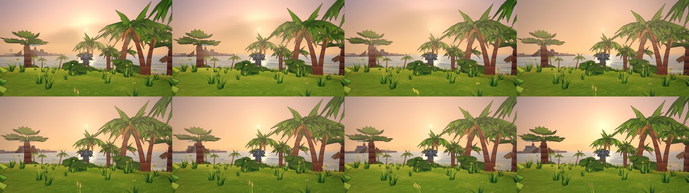
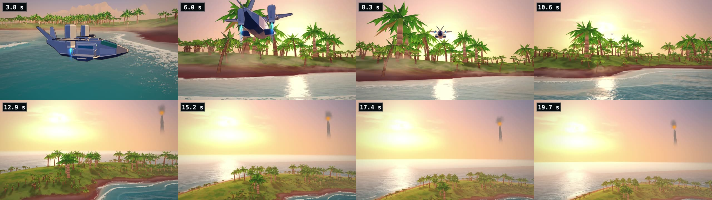
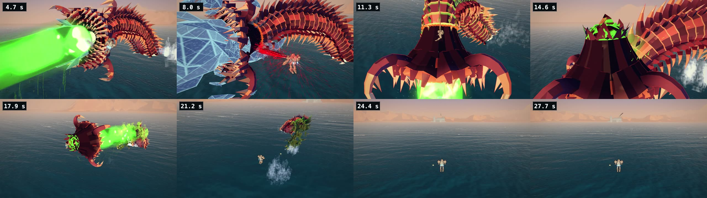
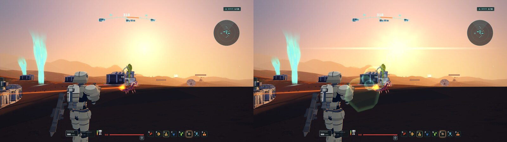
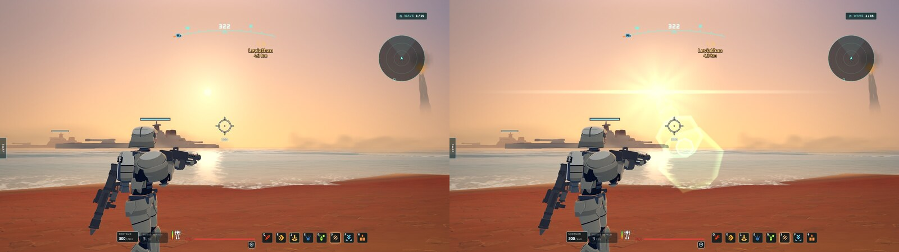
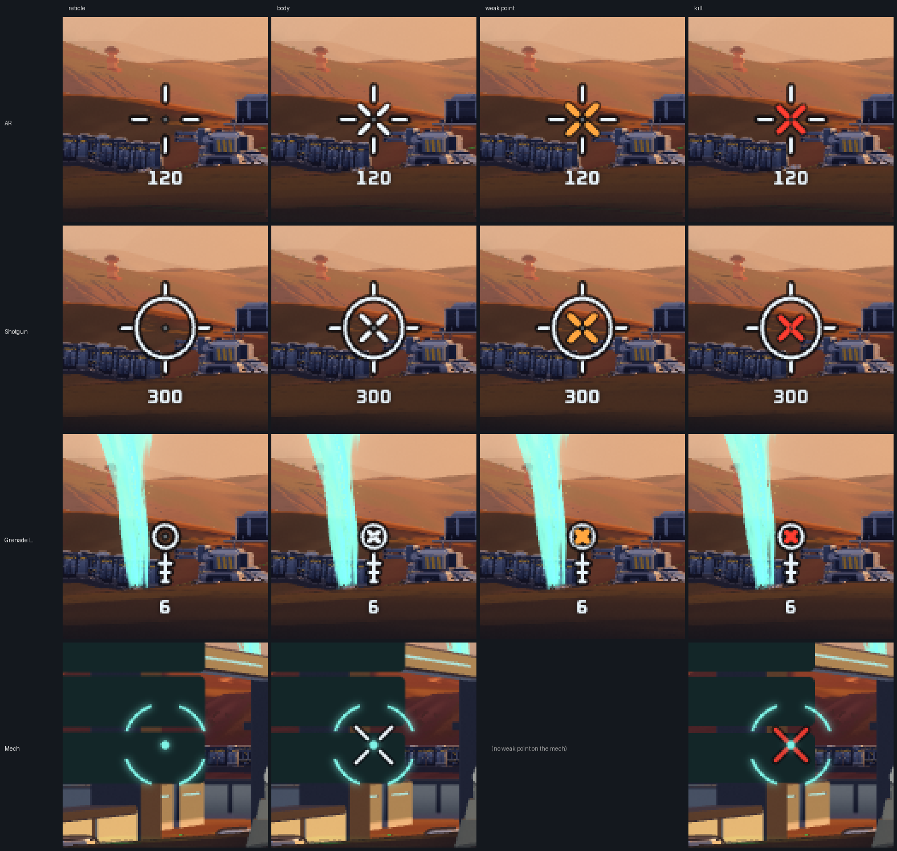

Steel Tide clips
Version 5, 11-15. New stills at the bottom. Newest first. Each clip: a still sheet (always shows), then the video (720p, no sound).
1. NEW. Island wind, grass and palms (10 s)
From the M84 build (not live yet): palms and the refined grass swaying in gusts at the play camera on the beach. Real-time frames.

Video (2.2 MB):
Open the video on its own (2.2 MB)2. NEW. Extraction outro, round 9 (20 s)
The laptop build that passed review (not live yet): the craft leaves the lagoon over the new palms, then the island hold.

Video (3.1 MB):
Open the video on its own (3.1 MB)3. Leviathan jaw grab (14 s)
Live build M83. The beam-end fix (taper to the target, orb impact) is not in this build yet.

Video (2.9 MB):
Open the video on its own (2.9 MB) Open as a GIF4. Leviathan finisher (28 s)
Live build M83. The ice shake near 5.7 s is the regression now being fixed; the last 4 seconds are the mech standing.

Video (7.3 MB):
Open the video on its own (7.3 MB) Open as a GIF5. Ocean titan (13 s)
Live build M83. The hull alone at sea, camera orbit. No moves are fired in this row.

Video (2.0 MB):
Open the video on its own (2.0 MB) Open as a GIFStills (new, not live yet)
Sun lens flare, round 3, desert: off on the left, on on the right. A long streak and coloured six- and eight-sided ghosts. Two ghosts fall near the crosshair; the reviewer is judging whether that hurts aiming.

Sun lens flare, round 3, ocean: off left, on right.

Hit markers, round 2 (passed review): assault rifle, shotgun, grenade launcher and the mech; each with the reticle alone, a body hit (white), a weak point hit (amber) and a kill (red). Every marker sits inside its reticle.
